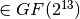
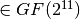

LOKI97¶
Description¶
LOKI97 is a block cipher which was a candidate in the Advanced Encryption Standard competition. It is a member of the LOKI family of ciphers, earlier instances being LOKI89 and LOKI91. LOKI97 was designed by Lawrie Brown, assisted by Jennifer Seberry and Josef Pieprzyk. The LOKI97 round function uses two columns each with multiple copies of two basic S-boxes. The S-boxes chosen for LOKI97 use cubing in a galois field  with n odd. In order to use odd sized inputs, S1 uses 13 input bits, and S2 uses 11. The S-box functions are:
with n odd. In order to use odd sized inputs, S1 uses 13 input bits, and S2 uses 11. The S-box functions are:
S1[x]=((x XOR 1FFF)^3 mod 2911) & FF 
S2[x]=((x XOR 7FF)^3 mod AA7) & FF 
where all constant above are written in hex and all computations are done as polynomials in .
Summary¶
| S-box | size | NL | LD | DEG | AI | MAXAC |  |
LP | DP |
|---|---|---|---|---|---|---|---|---|---|
| S1 | 13x8 | 4032 | 0 | 2 | 2 | 8192 | 134217728 | 0.000244140625 | 0.0078125 |
| S2 | 11x8 | 992 | 0 | 2 | 2 | 2048 | 8388608 | 0.0009765625 | 0.0078125 |
S1¶
Representations¶
Polynomial representation in ANF
Walsh Spectrum representation (256x256 first values except first row and column):

S2¶
Representations¶
Polynomial representation in ANF
Walsh Spectrum representation (256x256 first values except first row and column):